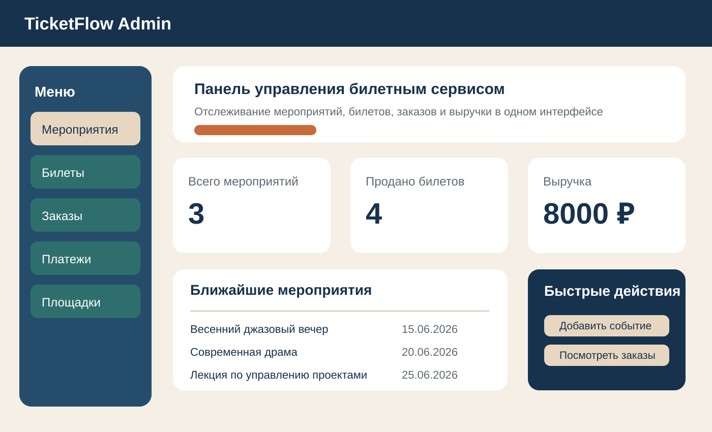

В качестве темы итогового проекта выбрано направление «Разработка базы данных». Тема проекта: «Разработка базы данных для сервиса продажи билетов на мероприятия». Проект ориентирован на Linux-среды, так как итоговая система разворачивается в контейнере Docker с PostgreSQL и может быть запущена в любой совместимой среде. Выбранная тема соответствует требованию по трудоемкости, так как основная работа распределяется между двумя участниками и включает проектирование структуры данных, реализацию SQL-скриптов, подготовку тестовых данных и демонстрационных запросов.
| Участник | Роль в команде | Зона ответственности |
|---|---|---|
| Магомедова Лолита | Разработчик | Проектирование структуры базы данных, оформление отчетов, подготовка презентации. |
| Багирян Марьям | Разработчик | Подготовка тестовых данных, SQL-запросов, проверка сценариев запуска и демонстрации проекта. |
Команда состоит из двух человек. Каждый участник выступает в роли разработчика, при этом обязанности распределены так, чтобы обеспечить параллельную и согласованную работу над проектом.
| Заголовок | Заказчик (actor) | Примечание | Цель |
|---|---|---|---|
| Создание мероприятия | Как организатор | Я хочу добавлять новое мероприятие с датой, площадкой и базовой ценой | Чтобы публиковать события для последующей продажи билетов |
| Учет площадок | Как администратор сервиса | Я хочу хранить список площадок с адресом и вместимостью | Чтобы корректно связывать мероприятия с местом проведения |
| Управление билетами | Как менеджер мероприятия | Я хочу формировать билеты по местам, секторам и статусам | Чтобы контролировать доступность и продажи билетов |
| Оформление заказа | Как покупатель | Я хочу оформлять заказ на один или несколько билетов | Чтобы покупать места на интересующие меня мероприятия |
| Фиксация оплаты | Как администратор сервиса | Я хочу сохранять способ оплаты, сумму и статус платежа | Чтобы учитывать финансовые операции по заказам |
| Просмотр свободных билетов | Как покупатель | Я хочу видеть свободные билеты по конкретному мероприятию | Чтобы быстро выбрать подходящее место |
| Анализ выручки | Как организатор | Я хочу получать сведения о выручке по мероприятиям | Чтобы оценивать эффективность продаж |
Сформулированные User Story описывают ключевые сценарии работы будущего программного продукта и могут уточняться по мере дальнейшей разработки проекта.
В качестве интерфейса выбран веб-ориентированный административный экран сервиса продажи билетов. На макете отображены боковое меню, ключевые показатели, список ближайших мероприятий и быстрые действия. Такой макет позволяет на раннем этапе определить, какие данные и сущности обязательно должны поддерживаться в базе данных.

Для ведения проекта используется система контроля версий Git. В рабочей папке уже создан локальный Git-репозиторий проекта. На момент подготовки отчета удаленный репозиторий в текущем окружении еще не подключен, поэтому для совместной работы рекомендуется создать удаленный репозиторий на GitHub или GitLab и добавить его командой:
git remote add origin <ссылка_на_удаленный_репозиторий> git branch -M main git push -u origin main
После подключения удаленного репозитория оба участника команды должны получить доступ на чтение и запись, что обеспечит совместную разработку и обмен изменениями через Git.
Разработка проекта уже начата: определена тема, сформирована команда, подготовлена структура базы данных, созданы SQL-скрипты и тестовые данные, а также настроен запуск PostgreSQL через Docker. В ходе дальнейшей работы код и SQL-скрипты должны сопровождаться понятными комментариями, а все изменения необходимо фиксировать в системе контроля версий небольшими осмысленными коммитами. Код должен быть легко читаемым, логично структурированным и удобным для поддержки.
В первой части итогового проекта выполнены все стартовые этапы: выбрана тема разработки, определен состав команды, сформулированы функциональные требования в формате User Story, подготовлен макет интерфейса, выбран способ ведения репозитория и зафиксированы правила начала разработки. Это создает основу для дальнейшей технической реализации проекта в следующих частях итоговой работы.